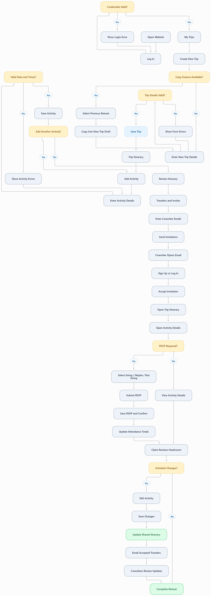

Corporate Claire | Corporate Retreat Organizer
1. Persona
Name and Background
Name: Corporate Claire
Age: 38
Profession: Corporate Event Planner
Role: Repeat Trip Organizer
Trip: Five-Day Company Retreat in Mexico
Group: Ten Coworkers, Including Claire
Claire is a 38-year-old corporate event planner responsible for organizing quarterly company retreats, conferences, and team travel for groups of approximately 8 to 20 coworkers. She is experienced in coordinating professional events and regularly manages several trips throughout the year.
Claire is currently planning a five-day company retreat in Playa del Carmen, Mexico, scheduled for December 2026. Ten employees, including Claire, will attend. The retreat combines structured company activities with optional opportunities for coworkers to socialize and explore the destination.
Because Claire has organized similar retreats before, she prefers not to rebuild every itinerary from the beginning. She values efficient planning tools, consistent processes, and the ability to keep all attendees informed without repeatedly answering questions about schedules and locations.
2. Technology
Devices
- Primary: Apple MacBook Air M4 for creating itineraries, managing reservations, and coordinating events.
- Secondary: iPhone 18 for reviewing schedules, checking attendance, and making updates while traveling.
Technology Proficiency
Claire has high technology proficiency. She regularly uses web-based productivity tools, shared calendars, email, spreadsheets, and collaborative platforms to coordinate professional events.
She is comfortable learning new applications, but expects business tools to be efficient and logically organized. She prefers straightforward forms, reusable information, and clear confirmation that her changes have been saved.
Loves
- Reusing information from previous company retreats when possible.
- Keeping schedules, locations, and event details organized.
- Communicating important updates to multiple coworkers at once.
- Knowing which employees plan to attend individual activities.
- Having one reliable source for the latest itinerary.
Hates
- Reentering the same information for recurring company events.
- Answering repetitive questions about dates, times, and locations.
- Managing multiple outdated versions of an itinerary.
- Chasing coworkers for attendance confirmations.
- Communicating schedule changes individually to every attendee.
Frustrations and Needs
Claire's biggest frustration is the amount of repetitive administrative work involved in organizing corporate travel. Even when a retreat follows a familiar structure, she still needs to coordinate updated dates, venues, activities, and employee attendance.
Information is often scattered across email threads, spreadsheets, shared calendars, and booking confirmations. Claire needs a centralized itinerary that coworkers can access independently so everyone is referencing the same schedule and event details.
Claire also needs an efficient way to invite employees, collect activity RSVPs, review attendance totals, and communicate changes. Because she organizes multiple trips each year, she would especially appreciate the ability to copy a previous trip, although she can still create a new trip manually if necessary.
3. Attitudes and Behaviors
Claire is organized, detail-oriented, and efficiency-driven. She approaches corporate travel as a professional responsibility and prefers establishing a clear schedule before distributing information to coworkers. She plans around company priorities while also allowing employees opportunities to participate in optional activities.
As a repeat organizer, Claire often references previous company retreats when preparing a new itinerary. She prefers to reuse successful activities and familiar planning structures rather than starting entirely from scratch. However, she understands that dates, locations, costs, and attendance must be reviewed for each new trip.
Claire communicates primarily through email and expects coworkers to access information digitally. She prefers sending invitations once the itinerary is ready, then allowing employees to review the schedule and submit their own RSVPs. She values having an organizer-only attendance summary instead of manually collecting responses.
During the retreat, Claire frequently checks the itinerary on her phone and updates activities when plans change. She wants the shared schedule to reflect the latest information and expects accepted travelers to receive email notifications about updates. Her goal is to spend less time coordinating logistics and more time supporting a successful retreat.
4. User Story
As a repeat corporate trip organizer, I want to create and share itineraries in one place so coworkers can access current trip details and RSVP to activities independently.
5. Use Case
Use Case Statement
As a corporate event planner who organizes recurring company retreats, I need to create a new trip itinerary, schedule activities, and invite coworkers so everyone can stay informed without relying on repeated emails and individual updates.
Scenario
Claire is planning a five-day company retreat in Playa del Carmen, Mexico, for December 2026. Ten employees, including Claire, are expected to attend. The schedule includes required company activities, such as an annual team review and a team-building session, along with optional social and recreational activities.
Claire logs into her existing account and opens My Trips, where she can view the retreats she previously organized. She selects Create New Trip. If the website supports copying a previous trip, she uses last year's retreat as a starting point. Otherwise, she enters the new trip information manually.
Claire updates the trip name, destination, dates, and description. She creates activities with confirmed start and end times, locations, costs, and notes. She identifies company-wide events as Core and recreational opportunities as Optional.
After reviewing the itinerary, Claire invites coworkers by email. Each employee accepts the invitation through their own account, accesses the shared itinerary, and submits Going, Maybe, or Not Going responses for activities that require RSVP.
Claire monitors attendance through the organizer-only summary within the itinerary. If an activity changes, she edits its details and the website sends an email notification to accepted travelers.
Preconditions
- Claire has an existing account with the trip-planning website.
- Claire has previously organized company retreats and can access her past trips.
- The company has selected Playa del Carmen as the retreat destination.
- The retreat dates and core company activities have been identified.
- Claire has the email addresses of the employees she plans to invite.
- Activity start and end times must be confirmed before each activity can be saved.
Postconditions
- Claire has created a new company retreat trip.
- The itinerary includes core company activities and optional events.
- Each saved activity has a valid date, start time, end time, and location.
- Coworkers have received email invitations to the trip.
- Accepted travelers can view the same itinerary.
- Coworkers can submit Going, Maybe, or Not Going responses when RSVP is enabled.
- Claire can review attendance totals within the itinerary.
- Activity changes appear in the shared itinerary and trigger email notifications.
- Previously organized trips remain available in Claire's account.
6. Detailed User Interaction Flow
Claire's interaction flow follows the same eight-page trip-planning website used by the other personas. Her experience emphasizes creating a new trip as a repeat organizer, scheduling corporate activities, inviting employees, tracking RSVPs, and communicating schedule changes.
Access Existing Account
Step 1: Log In
Claire: Opens the trip-planning website on her MacBook and selects Log In.
Website: Displays the login form with:
- Email Address
- Password
- Log In button
Claire: Enters her existing credentials and selects Log In.
Website: Validates her credentials. If incorrect, an error message appears. If valid, the website opens My Trips.
Step 2: Review Previous Trips
Claire: Reviews the trips displayed in My Trips, including previous company retreats.
Website: Displays trips Claire organizes and trips she attends, along with Create New Trip.
Claire selects Create New Trip to begin planning the December 2026 retreat.
Create the Corporate Retreat
Step 3: Open Create Trip
Website: Opens the Create/Edit Trip page with fields for:
- Trip Name
- Trip Type
- Destination
- Start Date
- End Date
- Trip Description
- Create Trip button
- Cancel button
If copying previous trips is implemented, this same page may also offer Copy Previous Trip. This is an optional enhancement, not a separate required page.
Step 4: Choose How to Create the Trip
Claire: Checks whether the Copy Previous Trip option is available.
Website: If copying is supported, displays eligible previously organized trips.
Claire: May select last year's company retreat as a starting point.
Website: If copying is supported, creates a separate editable trip draft while preserving the original trip.
If copying is not supported, Claire continues with the blank Create Trip form.
Step 5: Enter Retreat Details
Claire: Enters or updates:
- Trip Name: December 2026 Company Retreat
- Trip Type: Corporate Retreat
- Destination: Playa del Carmen, Mexico
- Start Date: Confirmed December departure date
- End Date: Five days after the trip begins, counting the departure day
- Trip Description: Annual company retreat with team meetings, collaboration, and optional group activities
Claire selects Create Trip or Save Trip, depending on the form state.
Website: Validates the required fields and confirms that the end date is not earlier than the start date.
If invalid, the website displays field-specific error messages. If valid, the trip is saved and its itinerary opens.
Build the Retreat Itinerary
Step 6: Review Trip Itinerary
Claire: Reviews the newly created retreat itinerary.
Website: Displays the trip name, destination, dates, description, and chronological activity list.
Because Claire is the trip Organizer, the website displays Add Activity and other organizer controls.
Step 7: Open Add Activity
Claire: Selects Add Activity to schedule the annual company review.
Website: Opens the Add Activity form with:
- Activity Name
- Activity Type: Core or Optional
- Activity Date
- Start Time
- End Time
- Location Name
- Location Address
- Description
- Estimated Cost
- Cost Notes
- Event Notes
- Reservation Confirmation
- Reservation Link
- RSVP Required: Yes or No
- Save Activity button
- Cancel button
All accepted travelers can view the activities. There are no separate employee subgroups or visibility restrictions.
Step 8: Create Core Company Activity
Claire: Enters Annual Team Review as the activity name and selects Core.
She enters the confirmed activity date, start and end times, meeting location, and address.
In the description, she explains the purpose of the annual review. In Event Notes, she includes the meeting agenda, arrival instructions, and any materials employees should bring.
She enables RSVP if she wants employees to confirm attendance, then selects Save Activity.
Website: Validates required fields, confirms the date falls within the trip dates, and checks that the end time is later than the start time.
If invalid, the website displays error messages. If valid, the activity is saved and appears in the itinerary.
Step 9: Add Optional Activities
Claire: Returns to the itinerary and selects Add Activity to schedule an optional group dinner or excursion.
Website: Displays the same Add Activity form.
Claire: Selects Optional, enters the confirmed date and times, location, estimated cost, and activity notes.
She enables RSVP to collect participation responses and selects Save Activity.
Website: Validates and saves the optional activity within the itinerary.
Step 10: Review and Edit Schedule
Claire: Reviews the itinerary to confirm the order, dates, times, locations, and costs of all activities.
If an activity needs correction, she selects Edit Activity.
Website: Opens the existing activity information in the Edit Activity form.
Claire: Makes the correction and selects Save Activity.
Website: Validates the changes and updates the chronological itinerary.
Invite Corporate Travelers
Step 11: Open Travelers & Invites
Claire: Selects Travelers & Invites from the retreat itinerary.
Website: Displays the traveler roster, invitation statuses, and Invite Traveler button.
Step 12: Send Employee Invitations
Claire: Selects Invite Traveler.
Website: Displays an invitation form with:
- Adult Traveler Email Address
- Add Another Email button
- Invitation Message
- Send Invitations button
- Cancel button
Claire: Enters the email addresses of the nine coworkers who will attend the retreat.
She includes a message explaining that the shared itinerary contains company meetings and optional activities.
She selects Send Invitations.
Website: Validates the email addresses, sends the invitations, and displays Pending invitation statuses.
Step 13: Coworkers Accept Invitations
Coworker: Opens the invitation link from their email.
Website: Opens Accept Invitation and prompts the coworker to Sign Up or Log In.
Coworker: Creates an account if necessary, or logs in, then accepts the invitation.
Website: Adds the coworker to the retreat, changes their invitation status to Accepted, and provides access through My Trips.
Collect Employee Activity RSVPs
Step 14: Coworker Reviews Activity
Coworker: Opens the retreat from My Trips, reviews the itinerary, and selects an activity.
Website: Opens Activity Details & RSVP and displays the date, times, location, cost, description, notes, and reservation details.
Step 15: Coworker Submits RSVP
Website: Checks whether RSVP is required for the activity.
If enabled, the website displays:
- Going
- Maybe
- Not Going
- Submit RSVP button
Coworker: Selects a response and submits it.
Website: Saves the response, updates attendance totals, and displays an RSVP confirmation.
The confirmation includes an Add to Calendar option and host contact information.
Review Corporate Attendance
Step 16: Review Attendance Summary
Claire: Opens the retreat itinerary to review attendance for scheduled activities.
Website: Displays an organizer-only attendance summary within the itinerary.
Each RSVP-enabled activity shows the number of travelers marked Going, Maybe, Not Going, and Not Responded.
Claire uses these totals to coordinate meeting spaces, transportation, and optional excursions.
Manage Retreat Schedule Changes
Step 17: Update Activity Details
Claire: Learns that the annual team review must begin one hour later than originally scheduled.
She opens the itinerary, selects the activity, and chooses Edit Activity.
Website: Opens the Edit Activity form with existing information populated.
Claire: Updates the start time, adjusts the end time if necessary, and selects Save Activity.
Website: Validates the new schedule and saves the updated activity.
Step 18: Notify Coworkers
Website: Updates the shared itinerary and sends an email notification to accepted adult travelers.
The email identifies the changed activity and directs coworkers to the shared itinerary for current information.
Coworker: Opens the email and reviews the updated schedule.
Final Outcome
Step 19: Complete the Retreat
Claire: Manages the five-day company retreat with a shared itinerary that coworkers can access independently.
Website: Maintains the itinerary, stores employee RSVPs, and communicates activity changes through email.
Claire can return to My Trips later to reference the retreat when planning future company events.
Claire successfully creates and shares the company retreat itinerary, coordinates employee participation, and communicates schedule changes without managing multiple versions of the itinerary. Her coworkers can independently review activities and submit RSVPs, allowing Claire to focus on the retreat itself.
Corporate Claire User Flow Diagram
The diagram below illustrates Claire's journey as a repeat organizer, from logging in and creating a retreat to inviting coworkers, collecting RSVPs, and communicating updates.
